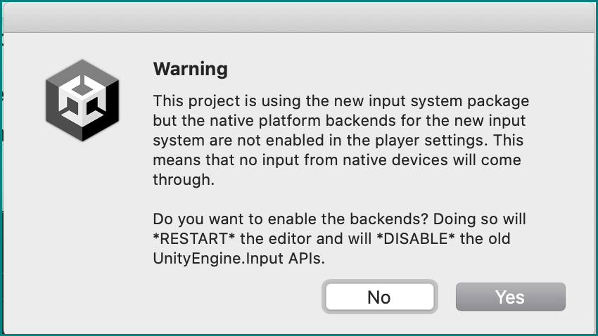
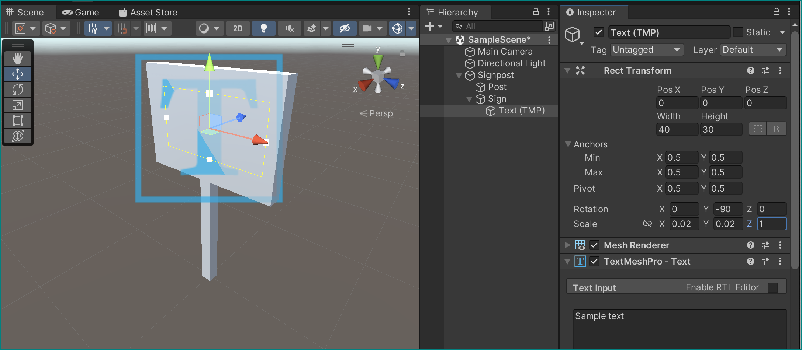

Saving, Loading, and Sampling
We've seen how Unity can load an audio file and use it. Now let's see how we can make it create new files by itself, like we would like it to for recording results from experiments.
New project
Let's make a new Unity project for this part, as we won't be needing VR for it. Go back to the Unity Hub and do so.
We're going to need the functionality of accessing a user's input, so we need to install the Input System package from the Package Manager:

This may trigger a warning and a prompt to restart the Unity Editor. Allow it:

We should now be all set to get going with this new project!
Set the scene
Let's add some objects to the scene.
A signpost
Create an empty GameObject and name it "Signpost", making sure it sits at the world origin (Position =(0,0,0)).
Right-clicking on this object, create two new cubes as its children with the following parameters:
- First cube:
- Name = "Post"
- Position =
(0,.5,0) - Scale =
(.09,1,.09)
- Second cube:
- Name = "Sign"
- Position =
(0,1.3,0) - Scale =
(.1,.7,1)
Now add a Text - TextMeshPro object as a child to sign object in the hierarchy and give it the following parameters:
- Width = 40, height = 30
- Position =
(0,0,0) - Rotation =
(0,-90,0) - Scale =
(.02,.02,1) - Give its text a centered alignment

Prefabs
Let's now turn this signpost into a Prefab — a reusable, preset object that can be easily re-created by Unity.
Make a new Resources folder within our assets, and simply drag our whole Signpost GameObject from the hierarchy directly in it — a prefab with its parameters is created, giving our Signpost a blue icon!

Remove the Signpost now from our hierarchy — we will use its prefab later.
Reading files: texts and textures
Let's get Unity to read some external files to work with in our project — in our case to spice up the appearance of our signpost.
Create a text file inside the Resources folder: right-click it (or within it) in the project browser to open in in Finder/Explorer, and use any old text editor for the next steps.
Name it SignpostData.txt, and give it the following contents:
pos:-2,0,-1
col1:.9,.67,.42
col2:1,1,1
txt:<i>NOTICE</i><br>Some text<br>To display<br>for information
As you may guess, we will use this to put text on the signpost and adjust its position.
To give it some texture instead of the elegant but simple white, download this image and also place it into Resources, renaming it SignpostTexture.jpg in the process.
Create a Scripts folder inside Assets (there shouldn't be one there yet), make a new script there called LoadFromResources and attach it to our Floor object as a component:
using System.Collections.Generic;
using System.Linq;
using TMPro;
using UnityEngine;
public class LoadFromResources : MonoBehaviour
{
// Start is called before the first frame update
void Start()
{
// Fill this next!
}
}
For now it doesn't do anything, so let's give is some functionality — all within its Start() method, step by step.
Create variables that can hold a GameObject, a string, and a Texture2D:
GameObject signpostPrefab = Resources.Load<GameObject>("Signpost");
string signpostData = Resources.Load<TextAsset>("SignpostData").text;
Texture2D signpostTexture = Resources.Load<Texture2D>("SignpostTexture");
These variables are immediately assigned the output of their respective Resources.Load<Type>("File name") methods, which look for files with a specific name within the Resources folder we created before, reads them, and converts them into the specified type: a GameObject fashioned after the Signpost prefab, a Texture2D from our supplied picture, and a string from our SignpostData.txt file.
This last variable, the signpostData string is still somehow vague in its use, so let's change that with a parsing function. Add it right after the previous code block, still inside Start():
// Parse text file to get custom signpost data
Dictionary<string, string> SPdataParsed = new Dictionary<string, string>();
foreach (string line in signpostData.Split('\n'))
{
if (line.Length == 0) continue;
// Split each line by key:value and store in dictionary
string[] lineSplit = line.Split(':');
SPdataParsed.Add(lineSplit[0], lineSplit[1]);
}
This creates a Dictionary from our text file, taking the colon (:) as a separator for each line: the left part of a line before it (e.g., pos) becomes a key and the right part (e.g., -2,0,-1) the value.
Instantiating a prefab
We can now use the information gotten from our signpostData.txt file to instantiate Signpost objects from the Signpost prefab and assign to them parameters that we store in our SPdataParsed dictionary:
// Instantiate prefab as a new gameobject
GameObject signpostGo = GameObject.Instantiate(signpostPrefab);
Transform signpostTrans = signpostGo.transform;
// Set signpost world position
float[] posRaw = SPdataParsed["pos"].Split(',').Select(float.Parse).ToArray();
signpostTrans.position = new Vector3(posRaw[0], posRaw[1], posRaw[2]);
MeshRenderer[] meshRenderers = signpostGo.GetComponentsInChildren<MeshRenderer>();
// Set colour of first child in signpost object (post)
float[] col1Raw = SPdataParsed["col1"].Split(',').Select(float.Parse).ToArray();
meshRenderers[0].material.color = new Color(col1Raw[0], col1Raw[1], col1Raw[2]);
// Set colour of second child in signpost object (sign)
float[] col2Raw = SPdataParsed["col2"].Split(',').Select(float.Parse).ToArray();
meshRenderers[1].material.color = new Color(col2Raw[0], col2Raw[1], col2Raw[2]);
meshRenderers[0].material.mainTexture = signpostTexture;
meshRenderers[1].material.mainTexture = signpostTexture;
// Set text
TextMeshPro signpostTMP = signpostGo.GetComponentInChildren<TextMeshPro>();
signpostTMP.text = SPdataParsed["txt"];
These last lines of the Start() function should mostly speak for themselves, even the highlighted operations performed the string values from in the dictionary, though they might contain so far unseen methods like Split() and Select() — try to understand what they do (the links should help).